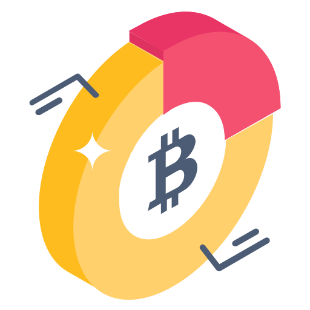
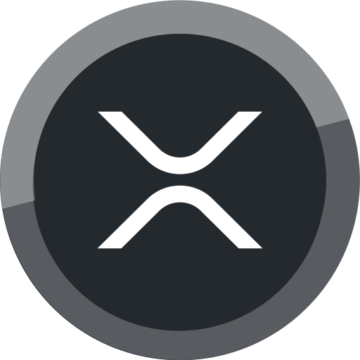
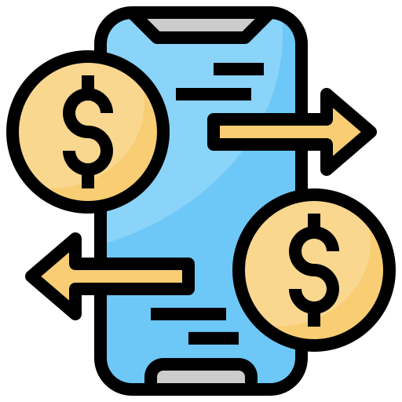

مقدمه
دنیای امروز با سرعتی سرسامآور به سمت دیجیتالی شدن در حرکت است. یکی از مهمترین تغییراتی که طی سالهای اخیر رخ داده، ظهور و گسترش ارزهای دیجیتال یا همان کریپتو بوده است. این ارزها با پشتوانه فناوری بلاکچین توانستهاند جایگاه ویژهای در نظام مالی جهانی پیدا کنند. بسیاری از کارشناسان معتقدند که آینده ارز دیجیتال میتواند به گونهای باشد که روشهای سنتی خرید و پرداخت بهتدریج کنار گذاشته شوند و جای خود را به تراکنشهای مبتنی بر رمزارز بدهند. در این مقاله به بررسی آینده ارز دیجیتال، نقش بیتکوین و دیگر رمزارزها در آینده، روشهای پرداخت با ارز دیجیتال و پیامدهای احتمالی این تغییرات خواهیم پرداخت.
 تحول در روشهای خرید و پرداخت
تحول در روشهای خرید و پرداخت
در گذشته، مبادلات مالی صرفاً به شکل حضوری و از طریق پول نقد انجام میشد. با ورود کارتهای بانکی، پرداختها آسانتر شدند، اما همچنان وابستگی به سیستمهای متمرکز بانکی وجود داشت. امروز با گسترش ارزهای دیجیتال، روشهای سنتی خرید در حال به چالش کشیده شدن هستند. بسیاری از فروشگاههای آنلاین و حتی فروشگاههای فیزیکی در نقاط مختلف جهان شروع به پذیرش بیتکوین و دیگر رمزارزها به عنوان روش پرداخت کردهاند. این روند نشان میدهد که آینده ارز دیجیتال بهطور مستقیم با حذف تدریجی روشهای سنتی گره خورده است.
 بیتکوین و نقش آن در آینده
بیتکوین بهعنوان اولین و پرچمدار ارزهای دیجیتال، جایگاه ویژهای در صنعت کریپتو دارد. این ارز دیجیتال که در سال ۲۰۰۹ معرفی شد، امروز به نمادی از استقلال مالی و عدم وابستگی به بانکهای مرکزی تبدیل شده است. پیشبینیها حاکی از آن است که در آینده، بیتکوین میتواند به یکی از مهمترین ابزارهای ذخیره ارزش و حتی جایگزینی برای طلا تبدیل شود. بسیاری از سرمایهگذاران بزرگ جهانی بخشی از سرمایه خود را به بیتکوین اختصاص دادهاند تا از مزایای آن در برابر تورم و نوسانات اقتصادی استفاده کنند.
 نقش آلتکوینها و تنوع در بازار
هرچند بیتکوین نقش پررنگی در آینده ارز دیجیتال دارد، اما نباید نقش سایر رمزارزها مانند اتریوم، ریپل، لایتکوین و کاردانو را نادیده گرفت. این ارزها هرکدام با ویژگیها و کاربردهای خاص خود میتوانند در بخشهای مختلف اقتصاد دیجیتال مورد استفاده قرار گیرند. برای مثال، اتریوم با قابلیت قراردادهای هوشمند، بستری برای اجرای پروژههای غیرمتمرکز فراهم کرده است. در آینده، تنوع بیشتر آلتکوینها میتواند به گسترش کاربردهای کریپتو کمک کند.
روشهای پرداخت با ارز دیجیتال
یکی از مهمترین جنبههای آینده ارز دیجیتال، نحوه پرداخت با این داراییهاست. در حال حاضر روشهای متنوعی برای پرداخت با ارز دیجیتال وجود دارد:
- پرداخت مستقیم با کیفپول دیجیتال: کاربران میتوانند با استفاده از کیفپولهای نرمافزاری یا سختافزاری، مستقیماً ارز دیجیتال خود را به کیفپول پذیرنده منتقل کنند.
- کارتهای اعتباری مبتنی بر کریپتو: برخی شرکتها کارتهایی ارائه میدهند که به کیفپول دیجیتال کاربر متصل است و امکان پرداخت در فروشگاهها را فراهم میکند.
- درگاههای پرداخت رمزارزی: کسبوکارها میتوانند از طریق این درگاهها پرداختهای کریپتویی را بپذیرند و در صورت نیاز آن را به ارز فیات تبدیل کنند.
- پرداختهای همتا به همتا (P2P): افراد میتوانند بدون واسطه و مستقیم با یکدیگر مبادله مالی انجام دهند.
آینده بانکداری و ارز دیجیتال
با رشد کریپتو، بانکها و نهادهای مالی سنتی نیز مجبور به سازگاری خواهند شد. بسیاری از بانکها در حال حاضر به بررسی و توسعه پروژههای مرتبط با بلاکچین هستند. همچنین، بانکهای مرکزی کشورهای مختلف به دنبال ایجاد ارزهای دیجیتال ملی (CBDC) هستند تا بتوانند در رقابت با ارزهای غیرمتمرکز باقی بمانند. این امر نشان میدهد که آینده ارز دیجیتال نه تنها در بخش خصوصی، بلکه در سیاستهای کلان اقتصادی نیز تأثیرگذار خواهد بود.
 امنیت و شفافیت در تراکنشها
یکی از ویژگیهای برجسته ارزهای دیجیتال، امنیت بالای تراکنشها و شفافیت آنهاست. فناوری بلاکچین امکان ثبت تراکنشها به شکلی تغییرناپذیر را فراهم میکند. این موضوع میتواند به کاهش تقلب و فساد در سیستمهای مالی کمک کند. در آینده، این شفافیت میتواند اعتماد عمومی به کریپتو را افزایش دهد و استفاده از آن را گستردهتر کند.
چالشها و موانع پیشرو
با وجود تمامی مزایا، آینده ارز دیجیتال بدون چالش نخواهد بود. برخی از مهمترین موانع عبارتاند از:
- نوسانات شدید قیمتی که باعث میشود برخی کاربران از استفاده روزمره از کریپتو خودداری کنند.
- نبود قوانین جامع و مشخص در بسیاری از کشورها که آینده ارز دیجیتال را با عدم قطعیت مواجه میکند.
- مشکلات فنی و مقیاسپذیری در برخی بلاکچینها.
- نگرانیهای زیستمحیطی ناشی از مصرف بالای انرژی در فرآیند استخراج برخی رمزارزها.
 آینده تجارت و کریپتو
آینده تجارت و کریپتو
با گسترش تجارت الکترونیک، استفاده از ارزهای دیجیتال میتواند نقش مهمی در تسهیل پرداختهای بینالمللی داشته باشد. در حال حاضر انتقال پول بینالمللی از طریق سیستمهای بانکی ممکن است چندین روز طول بکشد و هزینههای بالایی داشته باشد. در مقابل، استفاده از کریپتو میتواند این فرآیند را سریعتر و ارزانتر کند. در آینده، این موضوع میتواند انقلابی در تجارت جهانی ایجاد کند.
📢 پیشنهاد ویژه
تحلیل لایو روزانه فارکس و انس طلا
تحلیل میانمدت کریپتو
آموزش استراتژیهای کاربردی
مطالب مفید بازار به زبان ساده
نتیجهگیری
با توجه به روندهای فعلی، میتوان گفت آینده ارز دیجیتال به سمت گسترش و پذیرش گستردهتر پیش خواهد رفت. کریپتو نه تنها میتواند روشهای سنتی پرداخت را به چالش بکشد، بلکه حتی میتواند به ابزار اصلی مبادلات مالی جهانی تبدیل شود. بیتکوین و سایر رمزارزها احتمالاً در آینده جایگاه ویژهای در نظام مالی خواهند داشت. هرچند چالشها و موانعی در این مسیر وجود دارد، اما مزایا و نوآوریهایی که کریپتو به همراه دارد، چشماندازی روشن از آینده ارز دیجیتال ترسیم میکند.